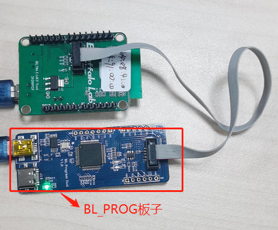

3. Freedom Studio¶
本文档介绍Freedom Studio的使用。下载地址https://github.com/sifive/freedom-studio/releases，版本为 FreedomStudio-2019-08-2 ；Freedom Studio使用需要先安装JDK环境。
3.1. 安装JDK环境¶
- JDK下载地址
https://www.oracle.com/java/technologies/javase/javase-jdk8-downloads.html,JDK安装，如图所示；


3.2. 导入工程¶
- 首先启动
Freedom Studio，打开工具栏上的File > import，选择General菜单下的Existing Projects into Workspace选项导入工程。


3.3. 配置工程launch文件¶
- 在工程中选择Debug Configurations，如果导入工程中有如下bl_iot_sdk_debug_freedom_studio_win_bl702等配置，那么该章节可以略过；

- 如果导入工程中未发现launch文件，此时需要配置一个launch文件用来Debug；本例以配置bl_iot_sdk_debug_freedom_studio_win_bl702为例；在工程中选择Debug Configurations，如图所示；

- 双击SiFive GDB OpenOCD Debugging，此时会出现一个新的 launch配置文件，选择该新的配置文件；如图所示；

- Main选项中添加需要Debug工程的elf文件，如果没有此文件，需要编译生成；如图所示；

- Target DTS 选项默认，如图所示：

- Debugger选项中设置如下，其中if_bflb_link.cfg、tgt_702_xip.cfg、702.init文件，默认在工程的debug目录下；


- Startup选项设置如下：Pre-run/Restart reset：Debug中点击Reset按钮，设备会自动复位；如图所示；

- Set breakpoint at:设备启动后，程序停在bl702_main函数；如图所示；

- Config选项中配置如下：Target Achitecture:选择riscv:rv32；如图所示；

- Source选项默认配置，如下：

- Common选项配置，如下：

3.4. Debug¶
- 需要将BL_PROG板子通过JTAG 连接上设备，BL_PROG板子与设备通过USB连上电脑，此时电脑能检测到2个USB端口，下载工具
zadig其下载地址为https://zadig.akeo.ie/通过工具将串口(较大的串口号)设置为WinUSB，如图所示：



- 在
Freedom Studio中选择Debug Configurations选项; 选择bl_iot_sdk_debug_freedom_studio_win_bl702配置，设备会复位重新运行; 选择bl_iot_sdk_debug_freedom_studio_win_attach_bl702配置,表示直接连上设备并不会复位设备,点击相应的Debug按钮进行debug


- 如果选择
bl_iot_sdk_debug_freedom_studio_win_bl702配置,可以看到程序停在void bl702_main()主函数处，此时可以点击下图中的3个按钮。其含义分别为- 第一个Step Into（F5） 单步执行，遇到子函数就进入并且继续单步执行；
- 第二个Step Over （F6）在单步执行时，在函数内遇到子函数时不会进入子函数内单步执行，而是将子函数整个执行完在停止，也就是把子函数整个作为一步；
- 第三个Step Return（F7）在单步执行到子函数内时，用Step Return就可以执行完子函数余下部分，并返回上一层函数。